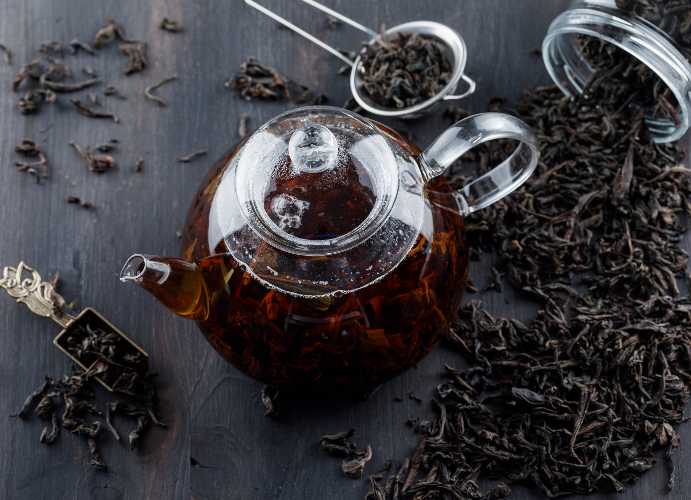

Велика Британія - це країна в Західній Європі, яка складається з чотирьох країн: Англії, Шотландії, Уельсу та Північної Ірландії. Вона має багату історію, культуру та вплив на світові події, включаючи колонізацію, індустріальну революцію та роль у світових війнах.
Загальні відомості про Велику Британію
Офіційна назва
Об'єднане Королівство Великої Британії та Північної Ірландії
Столиця
Лондон
Офіційна мова
Англійська
Населення
близько 66 мільйонів
Площа
243,610 км²
Валюта
Фунт стерлінгів (£)
Що подивитися у Великій Британії насамперед?
У Великій Британії ви можете насолоджуватися при уважному підході до екскурсій, яка буде вражати своєю вишуканістю, дивуючою природою та культурною різноманітністю.
Біг Бен
Це символ Лондона та один із найвідоміших годинників у світі. Насправді, "Біг Бен" відноситься до дзвона всередині Великого Часового механізму Палацу Вестмінстер. Також він часто використовується, щоб називати годинникову вежу, де він розміщений. Висота годинника становить понад 96 метрів, і його годинний механізм є одним з найточніших у світі.
Единбурзький замок
Є одним з найбільш вражаючих історичних споруд у Великій Британії. Розташований на високій скелі, він привертає туристів своєю містичною аурою та багатою історією. Замок служив як резиденція для шотландських королів з середньовіччя до 1603 року. Сьогодні це одне з найпопулярніших місць для туристів, які бажають дізнатися про історію Шотландії та насолодитися видовищними краєвидами міста.
Університет Оксфорд
Один з найстаріших та найпрестижніших університетів у світі. Заснований у 12 столітті, він відомий своєю академічною вагою та культурним впливом. Університет Оксфорд складається з багатьох коледжів, які розташовані по всьому історичному центру міста Оксфорд. Тут навчаються студенти з усього світу, а архітектура коледжів вражає своєю красою та старовинністю.
Музей Ульстера
Він зосереджується на збереженні та вивченні культури, історії та мистецтва Північної Ірландії. У музеї представлені різноманітні виставки, включаючи речі з археологічних розкопок, мистецтва, виробництва та інші аспекти культури регіону.
Озеро Лох-Несс
Розташоване в шотландських височинах та відоме своєю таємничістю, особливо пов'язаною з легендою про Нессі. Це друге за величиною озеро в Шотландії за площею і глибиною. Лох-Несс привертає багато туристів, які сподіваються побачити водяного чудовиська, а також за красивими пейзажами та можливостями для різноманітних видів активного відпочинку, таких як каякінг та прогулянки по берегу.
Всі ці місця є важливими культурними та туристичними пам'ятками, які привертають увагу людей з усього світу та кожне з них має свою унікальну привабливість та історію.
Що можна скоштувати?

Чай
Чай є важливою частиною британської культури. Чай з молоком часто п'ють під час чаювання, а також з десертами, сандвічами та іншими закусками.
Фіш енд чіпс
Класична британська закуска, яка складається з смаженої риби (зазвичай тріски) та картопляних смажених кришталів.
Сендвіч
Велика Британія відома своїми різноманітними сендвічами, такими як сендвіч з огірком та селедкою (Cucumber and Salmon), або сендвіч BLT (бекон, листя салату та помідори).
Велика Британія — це країна з багатою історією, яка вплинула на багато аспектів сучасного світу. Вона відома своєю культурою, літературою, технологіями та політичним впливом.